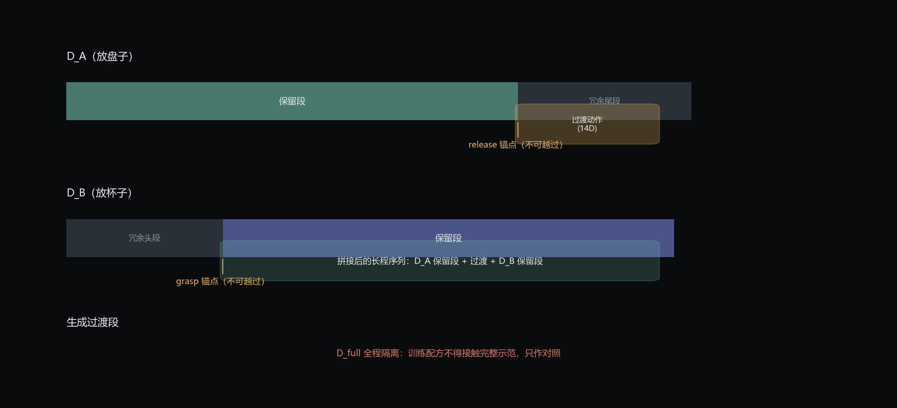
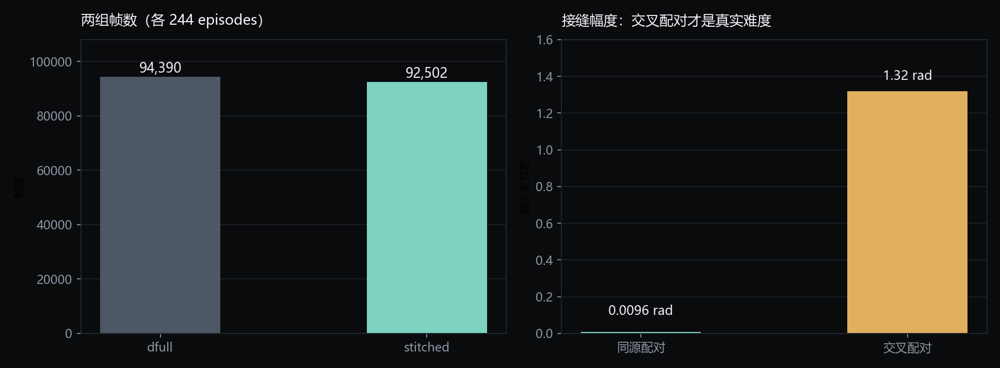

长程操作任务的完整人工示范采集成本高、场景覆盖稀疏。这个项目用两条短程技能示范， 裁掉冗余段、生成过渡段、补齐观测，拼出可训练的长程序列。
把「放盘子」和「放杯子」两段示范直接首尾相接，问题不在动作本身，而在接缝： 前一段结束时机械臂停在盘子附近，后一段开始时它已经在盘子旁准备抓杯—— 两段之间的关节空间有跳变，腕部相机看到的画面也不连续。
直接拼出来的数据会教模型执行不可达的动作。所以要做的不是「接起来」， 而是裁掉两侧的冗余、补上中间缺失的那一段。
语义锚点决定了哪一段能裁、哪一段不能碰。

从 RoboTwin 官方 2500 条 episode 里，按实测关节运动而非指令文本筛出可用的两段式样本。

| 筛选步骤 | 条件 | 数量 |
|---|---|---|
| 官方 episode | RoboTwin LeRobot 格式 | 2,500 |
| 双臂任务 | 两臂均有明显关节运动 | 1,119 |
| 干净两段式 | 两臂活动重叠 <10%，切分点两侧各 ≥40 帧 | 244 |
为什么必须交叉配对：如果用 d_a[i] + d_b[i]，拼出来就是原 episode 本身，两组完全相同。
所以用 d_a[i] + d_b[j]（i≠j），接缝从 0.0096 rad 拉大到 1.32 rad——
这个差距正是拼接方法要解决的问题。
采集与拼接两种数据在同一任务上的完整行程，各截取一次，不做剪辑。
所有验收阈值预先注册在 JSON 里，先定门后看结果；测量缺失一律视为不通过。
G1 接缝速度跳变、G2 加速度、G3 终点硬门、G5 时长上限，另有效率下限防止绕远路。
L1 在 SE(3) 半径内检索真实帧；检索不到即视为该帧未覆盖，降级到 L2 生成或 L4 模糊。
生成机制只在 2–6 帧内验证过；超过 6 帧强制降级，不静默生成。
49 项测试锁死锚点越界、预算不可行、阈值一致性、证据缺失等语义。
python tools/test_v21_contracts.py
# Ran 49 tests in 0.42s
# OK拼接数据最终要证明它能训出策略。训练走 OpenPI（JAX/Flax）对 π0.5 做 LoRA 微调， 在 4 卡上以 FSDP 参数分片跑通。
| 配置项 | 取值 |
|---|---|
| 模型 | π0.5，LoRA 双适配（gemma_2b_lora VLM 主干 + gemma_300m_lora 动作专家） |
| 并行 | fsdp_devices=4，batch_size=16（4 卡 × 4 样本） |
| 动作视界 | action_horizon=20，delta 关节 + 二值夹爪 |
| 训练框架 | OpenPI / JAX + XLA，权重初始化 pi05_base_jax |
| 预处理 | use_delta_joint_actions=True，相机映射 cam_head → cam_high |
24 GB 卡在 init_train_state 就报申请 4.8 GB 失败。改用 fsdp_devices=4 后失败点降到 527 MB，最终靠 XLA_PYTHON_CLIENT_ALLOCATOR=platform 解决——JAX 默认预分配整个显存池，换成按需增长的平台分配器才能跑。
batch_size 必须能被 fsdp_devices 整除（32÷5 直接报错，故用 4 卡）；HF_DATASETS_CACHE 与 HF_HOME 需指向大容量盘，否则根分区写满。
LeRobot 0.1.0 要求 meta/episodes_stats.jsonl；图像列必须用 datasets.to_parquet 写出否则被推断成 dict；还需补齐 index / timestamp / task_index 三列。
拼接组与完整示范组使用完全相同的训练配置与步数，唯一的系统性差异是数据构造方式，保证差异可归因。